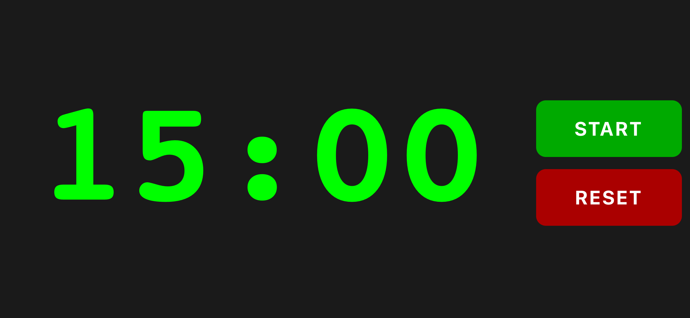
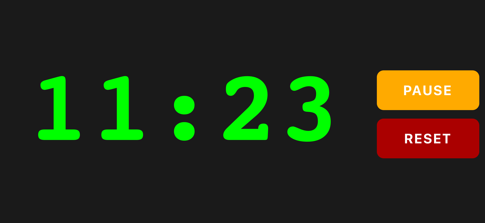
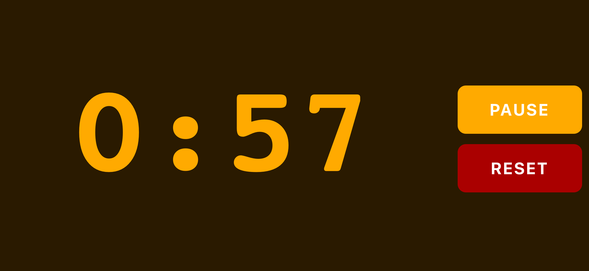
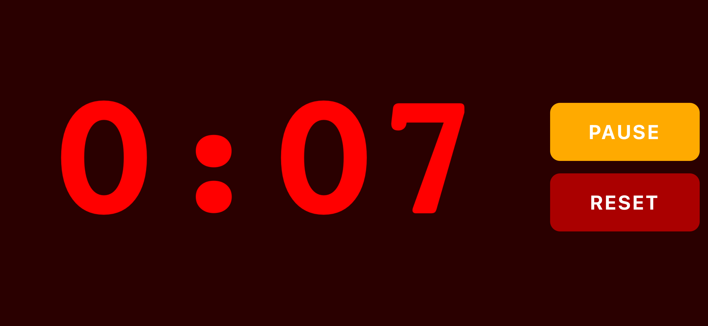

Actually see how much time you have left on a tiny screen.
Big Improv Timer is a bold, easy-to-read rehearsal timer designed for improv teams. Quickly see how much time you have left from across the room.
Use it right in your browser — no download needed.
On some phones, especially iPhone, the screen may still sleep. Before rehearsal, go to Settings → Display & Brightness → Auto-Lock and choose Never, then switch it back afterward.



